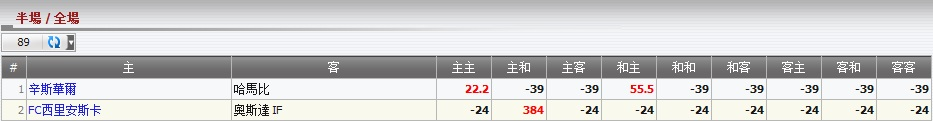

半場 /全場
定義:
顯示總代理基於上半場, 全場結果的輸贏數額。

圖 1.1
主
: 主隊
客
: 客隊
和
: 和局
主客
指:
上半場
: 主隊會贏。
全場
: 客隊會贏。
1 松茲瓦爾
-vs-
哈馬比
最後賽果:
主主
--> 總代理會輸
22.2
.
最後賽果:
和主
--> 總代理會輸
55.5
.
最後賽果: 其他 --> 總代理會贏
39
.
2 FC西里安斯卡
-vs-
奧斯達 IF
最後賽果:
主和
--> 总代理会输
384
.
最後賽果: 其他 --> 總代理會贏
24
.